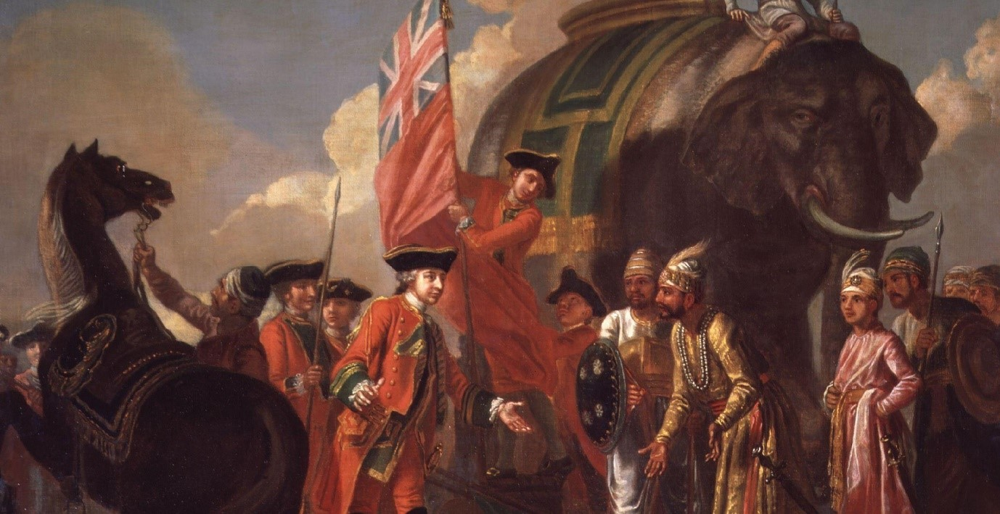

The Atrocities of the British Empire
A poll released by YouGov in 2016 revealed that 44% of the British public were “proud” of the British Empire. At its zenith, the British Empire ruled 25% of the world’s land surface, including large swaths of North America, Australia, Africa, and Asia, including the overseeing of 412 million inhabitants (23% of the world’s population at the time). But was this a moment of pride and prestige for the British? A basic glance at history reveals that there were a series of wars, rebellions, massacres, famines, and other atrocities, such as slavery and the use of concentration camps that took place as a direct consequence of the British Empire.
But the crimes of the British Empire are being forgotten entirely, primarily due to the complete disregard for it in the national curriculum. Whilst primary education teaches us about Henry VIII and his wives and secondary education focuses on Jack the Ripper and a hint of the Atlantic slave trade in America, there is not a single mention of the British Empire. Not even the instances of the Empire’s so-called ‘successes’, where the British brought about apparent economic development in particular parts of the world, where before, they had none – an argument consistently referred to by the proponents of the British Empire. Even this is ignored in order to also disregard the misdoings of the Empire.
The importance of remembering the atrocities of the British Empire and the brutish effects of colonialism and imperialism have therefore never been more relevant. But due to their abundance, it is difficult to list all of their transgression – but also because many have quite literally been lost to history. However, there are several examples that stand tall in the list of atrocities committed by the British Empire.
Boer Concentration Camps, 1899-1902
Forty years before the Nazis used concentration camps for Jews, the British were creating the 20th-centuries first ever concentration camps in South Africa during the Boer War. The Second Boer War began in October 1899 began when the two independent Boer states, the South African Republic and the Orange Free State, rose up against the British Empire following the discovery of gold and diamonds in the Boer States.
Although initial Boer attacks were successful, British reinforcements – upwards of 400,000 – enabled them to seize control of the two countries. But the war would continue for several more years with Boer guerrilla warfare refusing to surrender, and this continued right up until the British implemented their harsh counter-measures, which included concentration camps and a “scorched-earth policy” (military strategy destroying anything that might be useful to the enemy i.e. industrial resources, communication sites, transport etc.).
The use of concentration camps was most shocking, not least because it was the first of its kind in the modern age, but the reason why they were implemented. Boer guerrillas fought without uniforms meaning they blended into the farmlands. The British responded by setting up blockhouses, strongpoints, and barbed wire fences which partitioned entire territories. Civilian farms were burnt as part of the scorched earth policies, while the survivors were forced into the concentration camps.
A sixth of the Boer population – mainly women and children – were rounded up and detained in these camps, where overcrowding led to outbreaks of disease. Additionally, food was scarce, and of the 107,000 people interned in the camps, 27,927 Boers died, along with an unconfirmed number of black Afrikaans. There were also 46,370 civilian casualties.
Lizzie Van Zyl, a young girl, contracted typhoid in the camp and slowly died. Bloemfontein Camp, South Africa 1901 via Wikimedia Commons.
Jallianwala Bagh Massacre, 1919
On 13th April 1919, a large but peaceful crowd had gathered to protest the arrest of several notable activist leaders. In response to the gathering, commanding Brigadier-General Reginald Dyer surrounded the area with his soldiers. After blocking the only exist, soldiers opened fire on the crowd, continuing to fire until the protesters had fled and their ammunition was exhausted. In total, 379 were killed and over 1,200 were injured.
The brutish response in such peaceful settings and the lack of accountability for the massacre shocked the Indian population, and led to the Non-Cooperation Movement from 1920-1922. This was intensified by Reginald Dyer being lauded as a hero for leading the response and £26,000 was raised for him by the British public. While responses in England, such as Rudyard Kipling, praised the soldiers for doing their duty, others shocked at the incident, such as Rabindranath Tagore (first Indian Nobel laureate), renounced his knighthood, stating “such mass murderers aren’t worthy of giving any title to anyone.”
Some historians consider the Amritsar Massacre (or Jallianwala Bagh Massacre) as a crucial step towards the end of British rule in India. The British also never formally apologised for the massacre, but did express “regret” in 2019.
Painting Capturing the Amritsar Massacre, 1919, where 379 Indian’s were killed by British soldiers.
Famines in India, 1943
The Bengal Famine of 1943 was a famine in the Bengal province of British India (now Bangladesh and eastern India) during World War II. An estimated 2.1-3 million out of a population of 60.3 million died of starvation, malaria, and other diseases aggravated by malnutrition, population displacement, unsanitary conditions, and lack of healthcare.
While some historians hold the view that the famine occurred as a result of natural causes, the common consensus is that the famine was anthropogenic (man-made), as most historians assert that wartime colonial policies created and then exacerbated the famine.
The initial cause was the financing of military escalation led to wartime inflation as land was appropriated from thousands of peasants. On top of this, during the Japanese occupation of Burma, many rice imports were lost as the regions markets supplies and transport systems were disrupted by the British “denial policies” for rice and boats. The “denial polices” were part of the British’s scorched-earth initiative to deny the expected Japanese invaders access to food supplies, transport, and other resources, so they destroyed them.
Other factors included the Bengal Chamber of Commerce (headed by mainly British-owned firms) composed a Foodstuffs Scheme to provide preferential distribution of goods to workers in high priority roles (such as armed forces, war industries, and other “priority classes”) to prevent them from leaving their positions. This would all be compounded by Winston Churchill’s refusal to give aid, ostensibly due to wartime shortages of shipping, but recent historical works have proven this was not the case.
In total, 12 to 29 million Indians died of starvation while it was under the control of the British Empire for 190 years, all the while millions of tons of wheat were being exported to Britain. In 1943 specifically, up to four million Bengalis starved to death when Winston Churchill diverted food to British soldiers in countries such as Greece while a deadly famine swept through Bengal. Talking about the Bengal famine in 1943, Churchill said: “I hate Indians. They are a beastly people with a beastly religion. The famine was their own fault for breeding like rabbits.”
Starving children in India, 1945.
Partitioning of India, 1947
Cyril Radcliffe, the British lawyer and Law Lord, was responsible for the partition of British India. He would complete the lines of partition across the span of a single lunch, and would do so along religious lines. This would have the effect of uprooting over 10 million people, as Hindus in Pakistan and Muslims in India were forced to escape their homes as the situation quickly descended into communal violence.
The estimates vary between several hundred thousand to two million people who lost their lives in the sectarian killings, but this does not do the crime justice. A case study of total population inflows and outflows in the districts of Punjab, using data from the 1931 and 1951 census, led to an estimate 1.3 million missing Muslims who left western India but did not reach Pakistan. The corresponding number of missing Hindus and Sikhs along the western border is estimated at 800,000, putting the total number of missing people due to partition-related migration along the Punjab border at around 2.2 million.
On top of the missing people, there was also the rape and abduction of women during the migration. The Indian Government claimed 33,000 Hindu and Sikh women were abducted, and the Pakistan Government claim 50,000 Muslim women were abducted during the riots. By 1954, 20,727 Muslim women recovered from India, and 9,032 Hindu and Sikh women recovered from Pakistan.
The violent nature of the partition that arose from Britain’s partitioning of India created an n atmosphere of hostility, bitterness, and resentment that continued for decades and is still present today.
September 1947, Muslim refugees clamber on board an overcrowded train near New Delhi in an attempt to flee India. The partition displaced 15 million people and killed over a million via Getty.
Mau Mau Uprising, 1951-1960
The Uprising, also referred to as the Kenya Emergency, was a war in the British Kenya Colony between the Kenya Land and Freedom Army (KLFA) – who were also called the “Mau Mau” – and the British authorities, who comprised of white European colonist-settlers in Kenya, the British Army, and the local Kenya Regiment (British colonists, local auxiliary militia, and pro-British Kikuyu people).
Kenya achieved independence from Britain in 1960, but the MLFA failed to capture widespread support due to the British policy of divide and rule, as any attempts to unify factions were thwarted by internal divisions. The Uprising lasted 8 years and cost Britain £55 million to suppress, whilst also leading to 11,000 deaths among the Mau Mau – a figure which also included the 1,090 executions at the end of the war, the largest wartime use of capital punishment by the British Empire.
Beyond this was the war crimes committed by the British Empire in Kenya and the inhumane treatment of the Kikuyu tribe. Thousands of elderly Kenyans to this day claim that British colonial forces mistreated, raped, and tortured them during the Uprising of 1951-1960, and have launched a £200m damages claim against the United Kingdom Government. They described the camps as “Britain’s gulags” or concentration camps. Estimates of death in these camps vary, with historian David Anderson estimating 20,000, while Caroline Elkins believes the figure to be upwards of 100,000.